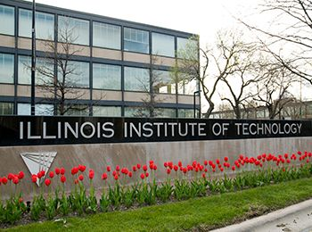

Summary
Cybersecurity and IT student focused on building secure systems through hands-on programming and technical problem-solving. Experienced in Java, Python, and C++.
Education

Illinois Institute of Technology
BS in Applied Cybersecurity and Information Technology
Minor in Artificial Intelligence | Expected 2028
Work & Research Experience
Amazon Fresh – Retail Associate
Oct 2025 – Feb 2026
- Used handheld devices and printers to process, track, and fulfill online customer orders.
- Met productivity and accuracy standards in a high-volume environment.
- Managed outbound order staging to support efficient fulfillment.
Data4All Science Workshop – UChicago
Sept 2022 – Nov 2022
- Used Python to analyze cholera epidemic datasets as part of a data science team.
- Identified trends and presented findings through data-driven reports.
- Developed analyses in Jupyter Notebook for clarity and reproducibility.
Volunteer Leadership
IIT Robotics – VP of Education
Nov 2024 – Dec 2025
- Led robotics and programming workshops for members in C++ and logic.
- Mentored new members to build technical and leadership skills.
- Strengthened organizational knowledge through documentation and workshops.